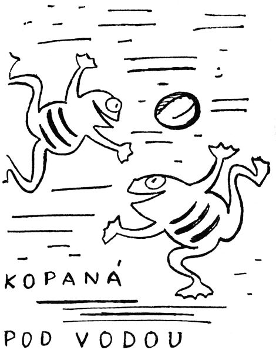
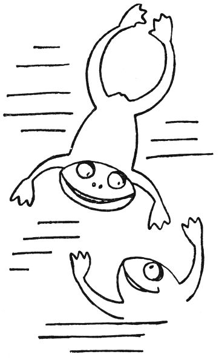

Pohádka vodnická
Jestli si, děti, myslíte, že vodníci nejsou, tak tedy vám říkám, že jsou, a jací! Tak třeba zrovna u nás, co jsme se my jako narodili, bydlel jeden v řece Úpě pod splavem, a jeden byl tuhle v Havlovicích u toho dřevěného mostu, a jeden se zdržoval v Radečském potoku, to byl Němec německá, ani slova česky neuměl; však jednou přišel k mému tatínkovi, aby si dal vytrhnout zub, a za to mu donesl košíček stříbrných a růžových pstruhů pěkně pokladených kopřivami, aby zůstali čerství; a že to byl vodník, bylo vidět z toho, že po něm na židli bylo mokro. A jeden byl u dědečkova mlýna v Hronově, a ten choval pod splavem, pod vodou šestnáct koní; proto inženýři říkali, že tam na tom místě má řeka Metuje šestnáct koňských sil. Těch šestnáct bílých koní pořád táhlo a táhlo, a proto se mlýn pořád točil; a když jedné noci náš dědeček tiše umřel, šel vodník a vypřáhl potichu všech šestnáct koní, a mlýn se tři dny netočil. Na velkých řekách jsou vodníci, kteří mají ještě víc koní, třeba padesát nebo sto; ale někteří jsou takoví chudáci, že nemají ani dřevěnou kozu.
Takový velkovodník v Praze, na Vltavě, je ovšem náramně bohatý a velký pán; má třeba i motorový člun a v létě si jede k moři. Vždyť v Praze i obyčejný, podřadný podvodník má někdy peněz jako slupek a lítá v automobilu, hú, hú, až bláto stříká. Ale jsou zase takoví nanicovatí malovodníčkové, mají loužičku jako dlaň a v ní jednu žábu, tři komáry a dva brouky potápníky; nebo mají svou živnost na tak mizerné stružce, že si v ní ani myš bříško neurousá; někteří za celý boží rok nechytnou víc než pár papírových lodiček a dětskou plínku, která mamince uplavala při praní. Ba, je to bída. A zase takový rožmberský vodník má třeba dvacet tisíc kaprů, a ještě k tomu líny, ševce, parmy a nějakou tu zubatou štiku. Inu, není žádná rovnost na světě.

Vodníci jsou samotáři, ale tak jednou dvakrát do roka, když je velká voda, se sjedou z celého kraje a konají, jak se tomu říká, okresní konferenci. Z našeho kraje se vždycky scházeli při velké vodě na lukách u Hradce Králové, protože tam je taková pěkná rovina a krásné tůně a zátočiny a slepá ramena vystlaná nejjemnějším bahnem dvojnulkou. To musí být žluté bahno anebo trochu do hněda; když je červené nebo šedé, to už není tak hebounké, zrovna jako mast. Na takovém pěkném mokrém místě se tedy sesednou a povídají si, co je nového: že tamhle v Suchovršicích dělají lidi regulaci, takže se tamní vodník, jako starý Jireček, musí odtamtud vystěhovat; že hrníčky a pentle podražily, to vám je hrůza: aby vodník, když chce někoho chytit, koupil za třicet korun pentlí, a hrníček stojí nejmíň tři koruny, a ještě je to šmízo; nejraději praštit řemeslem a chytit se něčeho jiného. A tu si vodníci vypravují, že jaroměřský vodník Faltys, ten zrzavý, se chytil obchodu a prodává minerální vody, a kulhavý Slepánek se stal instalatérem a dělá vodovody, a jiní si pomohli jinou živností. To se rozumí, děti, že vodník může dělat jen to řemeslo, ve kterém je něco od vody; tak například:
1. může si založit pohřební ústav a pořádat slavné i jednoduché pohřební prů… vody;
2. stát se spekulantem a dělat výnosné pod… vody;
3. nebo advokátem a provádět soudní roz… vody;
4. být spisovatelem pro lid a psát poučné ná… vody;
5. stát se notářem a provádět majetkové pře… vody;
6. jako hudebník skládat klavírní dopro… vody;
7. být obvodním lékařem pro soudní ob… vody;
8. dát se na vojnu jako rotmistra a dělat každoroční od… vody;
9. být majitelem jakéhokoliv velkozá… vodu;
10. nebo konečně člověkem vznešeného pů… vodu;
11. a nedělat docela nic jako nějaký vé… voda.
Krom toho může být vodník dobře sportovním závodníkem nebo psát do novin úvodníky.
Jak vidíte, zbývá pro vodníky dost výnosných živností, a proto jich také pořád ubývá; proto se počítají na svých výročních poradách a říkají si smutně: „Zas je nás o pět míň; mládenci, takhle naše povolání pomalu vymře.“
„Inu,“ povídá starý Kreuzmann, trutnovský vodník, „už to není, jako to bývalo. Holenku, tomu je hrůza tisíců let; tenkrát byly celé Čechy pod vodou, a člověk, čibržkom vodník, vždyť tehdy ještě lidé nebyli, no jo, to byly jiné časy – krucinál, kde jsem vlastně přestal?“
„Že byly celé Čechy pod vodou,“ pomáhal mu skalický vodník Zelinka.

„Aha,“ řekl Kreuzmann. „Tedy celé Čechy byly pod vodou, i Žaltman a Červená hůra a Krákorka a všechny ostatní hory; a našinec mohl mokrou nohou, pěkně pod vodou, jít třeba z Brna až do Prahy. Ještě loket nad Sněžkou byla voda. Lidi, to byly časy.“
„To byly,“ vzpomínal ratibořický vodník Kulda. „Tenkrát jsme my vodníci ještě nebyli takoví samotáři a poustevníci jako dnes. Tenkrát jsme měli podvodní města vystavěna z vodních cihel, a nábytek byl vyřezán z tvrdé vody, a peřiny byly z měkké dešťové vody, a topilo se teplou vodou; a nebylo ani dno ani žádný břeh ani povrch vody; byla jen voda a my.“
„Ba,“ povídal Liška řečený Hejkavec, ten vodník z žabokrcké mokřiny, „a jaká ta voda tehdy byla! Mohls ji krájet jako máslo, a koule z ní dělat, a nitě z ní upříst, a provazy z ní kroutit; byla jako ocel a jako len a jako sklo a jako pápěrka, a hustá jako smetana, a pevná jako dub, a hřála jako kožich. Všecko bylo uděláno z vody. Holenku, taková voda teď už není ani v Americe, kdepak!“ A starý Liška si odplivl, až se tam udělala hluboká tůně.
„Bejvala,“ řekl Kreuzmann zamyšleně, „bejvala tehdy moc krásná voda, ale byla ještě tentononc, dočista němá.“
„Jak to?“ podivil se Zelinka, který nebyl tak stár jako ti druzí.

„Inu, němá byla,“ povídal Liška Hejkavec. „Neměla žádný hlas. Neuměla ještě mluvit. Byla tak tichá a němá, jako je teď, když zmrzne. Nebo jako když napadne sněhu a je půlnoc a nic se ani nepohne; a tu je takové ticho, takové tichoučké ticho, že ti je až ouzko, a tu vystrčíš hlavu z vody a posloucháš; a tu se ti sevře srdce tím ukrutným tichem. Takové ticho tehdy bylo, když byla voda ještě němá.“
„A jak to,“ ptal se Zelinka, který byl stár jenom sedm tisíc let, „jak to, že už není němá?“
„To přišlo tak,“ řekl Liška. „Mně to vypravoval můj pradědeček a říkal, že už je tomu nějakých milión let. Tak tehdy byl živ jeden vodník, jakpak se honem jmenoval? Rákosník, ne Rákosník, Minařík, taky ne, Hampl, taky ne Hampl, Pavlásek, taky ne, hergot, jakže se jmenoval?“
„Arion,“ řekl Kreuzmann.
„Arion,“ přisvědčil Liška. „Taky jsem to měl na jazyku. Arion se jmenoval. A ten Arion měl vám takový divný dar, takovou schopnost od Pánaboha, inu, takové nadání, víte? On dovedl tak krásně mluvit a zpívat, že jednomu srdce skákalo a zase zaplakalo, když zazpíval. Takový to byl muzikant.“
„Básník,“ opravil Kulda.
„Muzikant nebo básník,“ řekl Liška, „ale uměl to, holenku. Říkal pradědeček, že všichni brečeli, když se dal do zpěvu. On měl, ten Arion, velikou bolest v srdci. Nikdo neví jakou. Nikdo neví, co se mu stalo zlého. Ale musela to být strašná bolest, že zpíval tak krásně a tak smutně. A jak tak pod vodou zpíval a naříkal, třásla se každá krůpějka vody, jako by to slza byla. A v každé krůpějce uvázlo něco z jeho zpěvu, jak se ten zpěv tou vodou prodíral. Každá kapička zachytila kousek jeho hlasu. A proto už není voda němá. A proto zvoní, cinká, ševelí a šeptá, zurčí a bublá, šplouná, šumí, hučí, ropotá, úpí a kvílí, burácí, řve, ječí a hřímá, sténá a vzdychá a směje se, hraje jako na stříbrnou harfu, klokotá jako balalajka, zpívá jako varhany, duje jako lesní roh a hovoří jako člověk v radosti nebo v žalu. Od té doby mluví voda všemi jazyky na světě a povídá věci, kterým už ani nikdo nerozumí, jak jsou divné a krásné. A nejmíň jim rozumějí lidé. Ale pokud nepřišel Arion a nenaučil vodu zpívat, byla stejně němá, jako je němé nebe.“
„Ale to nebyl Arion, co přinesl do vody nebe,“ řekl starý Kreuzmann. „To bylo až později, za mého tatíka, dej mu Pánbůh věčnou slávu, a udělal to vodník Kvakvakvokoax, a sice z lásky.“
„Jak to bylo?“ ptal se vodník Zelinka.
„To bylo tak. Kvakvakvokoax se zamiloval. Kvakvakvokoax viděl princeznu Kuakuakunku a zaplanul k ní láskou, kvak. Kuakuakunka byla krásná. Měla žluté žabí bříško, a žabí nožičky, a papulu žabí od ucha k uchu, a byla celá mokrá a studená; taková krasavice to byla. Takové už ani nejsou.“
„A co dál?“ ptal se vodník Zelinka dychtivě.

„Nu, co by bylo? Kuakuakunka byla krásná a pyšná. Nadýmala se jen a říkala kvak. Kvakvakvokoax byl jako blázen. Vezmeš-li si mne za muže, řekl jí, přinesu a dám ti, co budeš chtít. A tu ona řekla: Tedy mi přines modré z nebe, kvak.“
„A co udělal Kvakvakvokoax?“ ptal se Zelinka.
„Nu, co měl dělat? Seděl pod vodou a naříkal: Kva kva kva kvá, kva kva kva kvá. A pak si chtěl vzít život. Proto skočil z vody do vzduchu, aby se v něm utopil, kvak. Nikdo před ním ještě do vzduchu neskočil. Kvakvakvokoax byl první.“
„A co udělal ve vzduchu?“
„Nic. Podíval se nahoru, a nad ním bylo modré nebe. Podíval se dolů, a pod ním bylo také modré nebe. Kvakvakvokoax užasl. Tehdy ještě nikdo nevěděl, že se nebe odráží ve vodě. Když Kvakvakvokoax uviděl, že je na vodě modrá obloha, vykřikl podivením kvak a spadl zase do vody. A pak vzal Kuakuakunku na záda a vyskočil s ní do vzduchu. Kuakuakunka uviděla ve vodě modré nebe a vykřikla radostí kvakvá. Neboť jí Kvakvakvokoax přinesl modré z nebe.“
„A co bylo dál?“
„Nic. Byli pak spolu šťastně živi a narodilo se jim mnoho jiker. A od té doby vylézají vodníci z vody ven, aby viděli, že nebe je taky tam, kde je jejich domov. Když někdo opustí domov, ať je to kdo chce, a ohlédne se pak zpátky, jako se Kvakvakvokoax podíval do vody, vidí, že tam doma je to pravé nebe. Víš, to pravé modré a krásné nebe. Kvak.“
„A kdo to dokázal?“
„Kvakvakvokoax.“
„A Kuakuakunka.“
„Ať žije Kvakvakvokoax!
„A Kuakuakunka!“
V tu chvíli šel kolem jeden člověk a myslil si: To dnes ty žáby kvákají! I popadl kámen a hodil jej do té mokřiny. Voda vysoko vystříkla, zašplouchalo to a bylo ticho: všichni vodníci skočili do vody, a teprve příštího roku budou zase mít konferenci.
Lidové noviny 25. 12. 1923